مقدمه و جایگاه سامانه در زیستبوم دانشجو۳۶۰
فضاهای آموزشی — از کلاسهای هوشمند و آزمایشگاههای تخصصی تا سالنهای همایش — پراهمیتترین و در عین حال کمبازدهترین دارایی هر دانشگاه هستند. تجربهٔ رایج در اکثر دانشگاهها این است که رزرو فضاها در فایلهای اکسل پراکنده و دفترهای اداری انجام میشود؛ نتیجه، رزروهای متعارض، تجهیزات گمشده، آماری که هیچکس نمیتواند به آن اعتماد کند و ساعتهای بیکرانِ خالی وسط هفته است. فضایار۳۶۰ دقیقاً برای شکستن همین زنجیره ساخته شده است: یک مرجع واحد برای «شناسنامهٔ فضا»، «رزرو بدون تعارض»، «تحلیل استفادهٔ واقعی» و «بهینهسازی تخصیص».
این سامانه یکی از زیرسیستمهای زیستبوم دانشجو۳۶۰ است و بر مبنای اصل «استقلال عملیاتی، اتصال نسخهدار» طراحی شده است؛ یعنی فضایار۳۶۰ میتواند بهتنهایی و بدون وابستگی به هیچ سامانهٔ دیگری کار کند، اما در عین حال از طریق رونوشت مرجع و رویدادهای تکرارپذیر، دادهاش با پایهیار۳۶۰ (سامانهٔ پایهٔ زیستبوم) همخوان میماند. این انتخاب معماری، هم استقرار مستقل را ممکن میکند و هم درزگیری داده بین زیرسیستمها را از مرحلهٔ تحلیل خارج کرده و به قرارداد مشخص فنی میسپارد.
نسخهٔ ۱.۰.۰ که موضوع این سند است، «هستهٔ عملیاتی» نام دارد؛ به این معنا که تمام کارکردهای روزمرهٔ مدیریت فضا — از ثبت شناسنامه و قواعد ساعت مجاز تا رزرو تکرارشونده، انسداد تعمیراتی، شواهد جلسه، تحلیل ظرفیت و بهینهسازی — بهصورت کامل و از طریق رابط وب فارسی در دسترس است. کیفیت نسخه با ۳۸ سناریوی آزمون API (از جمله رقابت همزمان روی یک فضا)، آزمون پشتیبانگیری و بازیابی، و بازبینی بصری رابط تأیید شده و بهصورت دو بستهٔ «Docker» و «پرتیبل» منتشر شده است.
معماری کلی و پشتهٔ فناوری
معماری سامانه سهلایه و متقارن است: یک رابط کاربری تکصفحهای (SPA) که بهصورت ایستا سرو میشود، یک هستهٔ API نسخهدار که تمام منطق کسبوکار را متمرکز میکند، و یک پایگاه دادهٔ رابطهای که درستیِ داده را در لایهٔ خودش تضمین میکند. انتخاب عمدیِ پروژه این است که «قواعد سخت» (مثل منع رزرو متعارض) در دیتابیس، «قواعد گردش کار» (مثل نقشهای تأیید) در سرویسهای بکاند و «قواعد نمایش» (مثل تقویم شمسی) در فرانتاند زندگی کنند؛ با این تفکیک، هیچ مسیر فرعیای نمیتواند درستیِ داده را دور بزند.
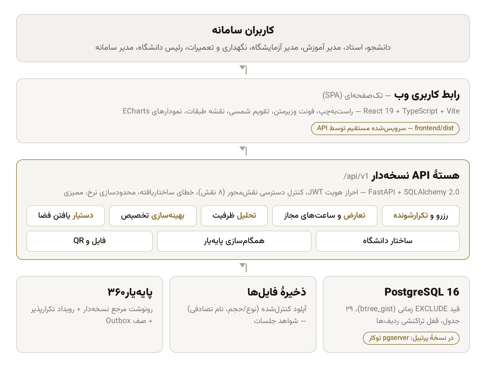
فرانتاند پس از ساخت (build) بهصورت فایل ایستا توسط همان سرویس API ارائه میشود؛ بنابراین در استقرار، تنها یک سرویس فعال است و نیازی به وبسرور جداگانه یا CDN نیست. اتصال پایهیار۳۶۰ نیز دو سنجه دارد: «رونوشت مرجع» که دادهٔ پایه (دانشگاه، ساختمان، فضا) را با شمارهٔ نسخه میآورد، و «رویداد خروجی (Outbox)» که تغییرات مهم را تکرارپذیر و با کلید یکتا به زیرسیستمهای دیگر میرساند.
| لایه | فناوری | نقش در سامانه |
|---|---|---|
| رابط کاربری | React 19, TypeScript, Vite, Tailwind 4 | SPA راستبهچپ با فونت وزیرمتن، تقویم شمسی، نقشهٔ دوبعدی طبقات و نمودارهای ECharts |
| هستهٔ API | Python 3.12, FastAPI 0.128, SQLAlchemy 2.0 | قرارداد نسخهدار /api/v1، احراز هویت JWT، کنترل نقش، خطای ساختاریافته، محدودسازی نرخ |
| پایگاه داده | PostgreSQL 16 (pgserver در پرتیبل) | ۲۹ جدول، قید EXCLUDE زمانی با btree_gist، قفل تراکنشی ردیفها، ممیزی |
| استقرار | Docker Compose / بستهٔ پرتیبل | پورت ۸۰۹۵، health-check داخلی، دادهٔ نمونهٔ اختیاری، اجرا بدون پیشنیاز |
مدل داده و ساختار سازمانی
ستون فقرات مدل داده، ساختار سلسلهمراتبی دانشگاه است: دانشگاه ← پردیس ← ساختمان ← طبقه ← فضا. هر گره این زنجیره جدول مشخصی دارد (campuses، buildings، floors، spaces) و هر فضا میتواند چند «چیدمان» (space_layouts) با ظرفیتهای متفاوت داشته باشد؛ چرا که یک سالن ۲۰۰ نفری در چیدمان کارگاهی ظرفیت مؤثر متفاوتی با چیدمان سمیناری دارد. قواعد ساعت مجاز هر فضا نیز جدولی مستقل است (availability_rules) و در درخواستهای رزرو بهعنوان دومین لایهٔ دفاعی کنترل میشود.
لایهٔ رزرو حول چهار جدول میچرخد: درخواست (booking_requests)، سری تکرارشونده (booking_series)، رخدادهای تاریخدار (booking_occurrences) و تخصیصهای قطعی فضا (resource_allocations). جدولِ تخصیص، تنها جایی است که «اشغال» معنا پیدا میکند و با قید یکتایی زمانی محافظت میشود؛ بازهٔ آن از effective_start تا effective_end است که نهتنها زمان جلسه، بلکه زمان آمادهسازی و پاکسازی (prep و cleanup) را نیز در بر میگیرد. تجهیزات در سه جدول مدل شدهاند (انواع، دارایی ثابت، استخر شمارشی) و اتصالشان به فضا در space_equipment ثبت میشود؛ قرضدادن تجهیز قابلحمل نیز جدول دارایی خودش را دارد.
| گروه | جدولها | مأموریت |
|---|---|---|
| ساختار سازمانی | campuses, buildings, floors, spaces, space_layouts, features, space_features, availability_rules | شناسنامهٔ فضا، ویژگیها و ساعتهای مجاز |
| رزرو و اشغال | booking_requests, booking_series, booking_occurrences, resource_allocations, equipment_allocations | گردش کار درخواست تا تخصیص قطعی بدون تعارض |
| تجهیزات | equipment_types, equipment_assets, equipment_pools, space_equipment | تجهیزات ثابت/قابلحمل/شمارشی و ظرفیت تجهیزاتی |
| عملیات | maintenance_blocks, usage_observations, approval_actions | انسداد تعمیراتی، شواهد جلسه و سابقهٔ تصمیمها |
| پلتفرم | users, audit_logs, idempotency_keys, uploaded_files, external_references, integration_events, outbox_events, optimization_runs, optimization_assignments | دسترسی، ممیزی، تکرارپذیری، اتصال نسخهدار و سناریوهای بهینهسازی |
کارکردها و قابلیتهای سامانه
در این بخش، کارکردهای اصلی سامانه بههمراه تصویر واقعی هر صفحه تشریح میشود. همهٔ تصاویر از استقرار عملیاتی با دادهٔ نمونه گرفته شدهاند و هر صفحهای که میبینید، بخشی از نسخهٔ منتشرشدهٔ ۱.۰.۰ است. ترتیب بخشها از «دیدن و ثبت» به «تصمیمسازی و بهینهسازی» چیده شده تا مسیر یادگیری کاربر جدید نیز بازتاب داده شود.
۴.۱ داشبورد مرکزی و اقدامهای نیازمند توجه
پس از ورود، داشبورد سه چیز را همزمان نشان میدهد: شمارندههای کلیدی (فضاهای ثبتشده، جلسات امروز، انسدادهای فعال و درخواستهای در انتظار بررسی)، برنامهٔ امروز با وضعیت هر جلسه، و فهرست درخواستهای نیازمند بررسی با دکمهٔ مستقیم بررسی. کارت «مرکز اقدام»، کارهای معلق را بر اساس نقشِ کاربر واردشده فیلتر میکند؛ مدیر آموزش درخواستهای کلاسی را میبیند، مدیر آزمایشگاه درخواستهای آزمایشگاهی را، و کاربر فقط آنچه را که اختیار تصمیم دارد میبیند.
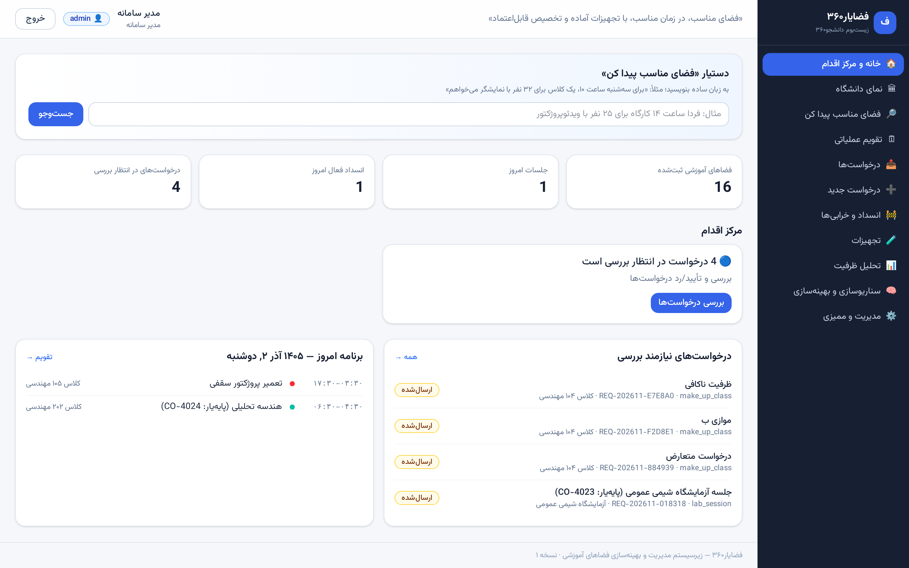
۴.۲ ساختار دانشگاه و شناسنامهٔ فضا
صفحهٔ «نمای دانشگاه» کل زنجیرهٔ پردیس، ساختمان و طبقات را در یک نگاه نشان میدهد و نقطهٔ ورود به شناسنامهٔ هر فضا است. شناسنامهٔ فضا، کارت کامل هویتی فضا است: کد و نام، نوع، وضعیت، ظرفیت مؤثر بر اساس چیدمان، ساختمان و طبقه، ویژگیها، تجهیزات ثابت و قواعد ساعت مجاز. برای هر فضا یک شناسهٔ عمومی و کد QR ساخته میشود که در بخش ۴.۱۰ توضیح داده شده است.
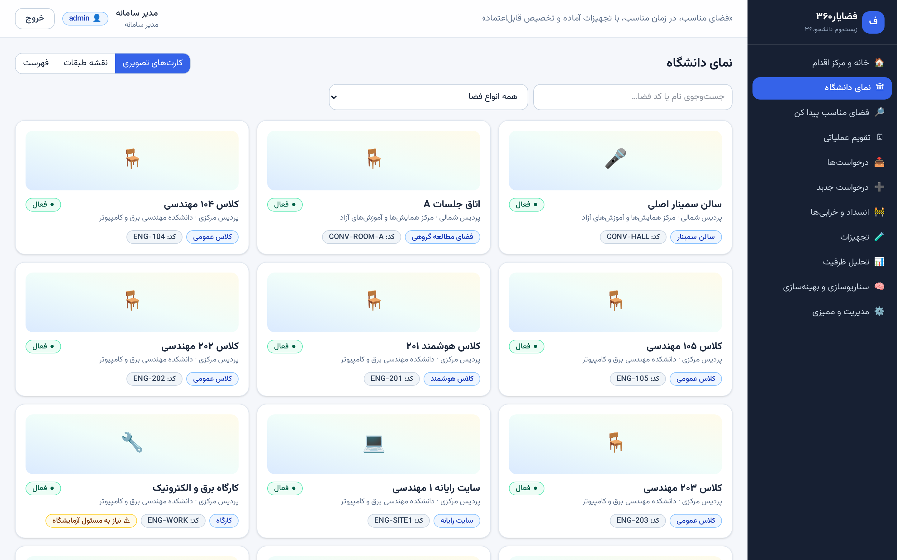
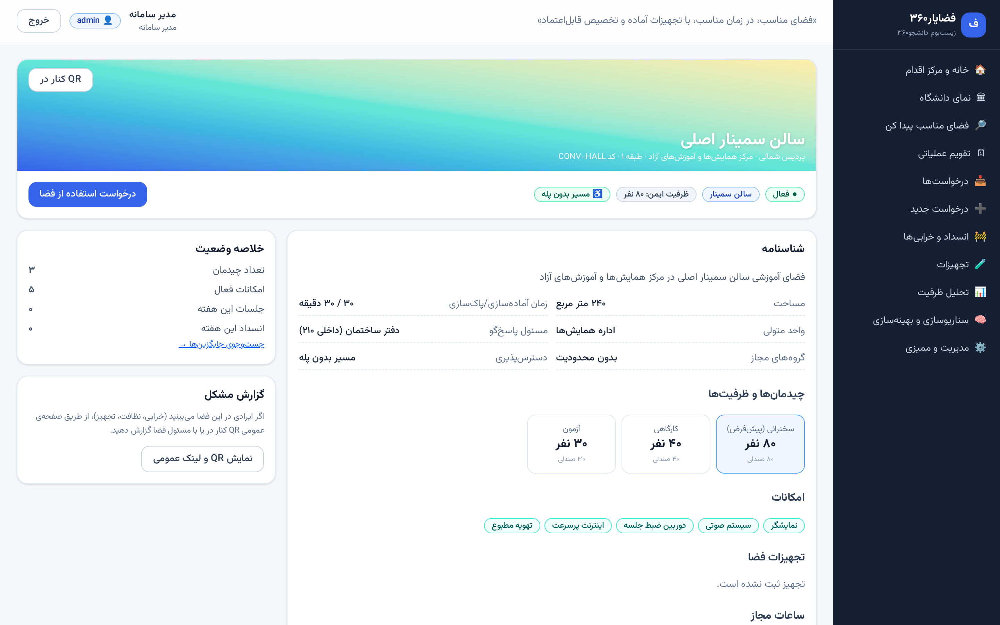
۴.۳ تقویم اشغال و رزرو تکرارشونده
تقویم عملیاتی، شبکهٔ هفتگی فضاهاست: ستونها روزهای هفتهٔ شمسی (شنبه تا جمعه) و ردیفها ساعتها؛ رزروهای تأییدشده بهصورت کارت رنگی روی شبکه مینشینند، جمعه بهعنوان روز غیرکاری پُررنگ میشود و ناوبری هفتهٔ قبل و بعد در بالای صفحه است. فرم درخواست جدید از همین زبان پیروی میکند: انتخاب فضا، بازهٔ زمانی با تقویم شمسی، و تعریف «تکرار» — هفتگی، هر دو هفته یا روزهای مشخص هفته با تاریخ پایان. سامانه بهجای یک رزرو کلی، برای هر جلسه «رخداد تاریخدار» میسازد تا جابهجایی، لغو و ثبت شواهد در سطح همان جلسه ممکن باشد.
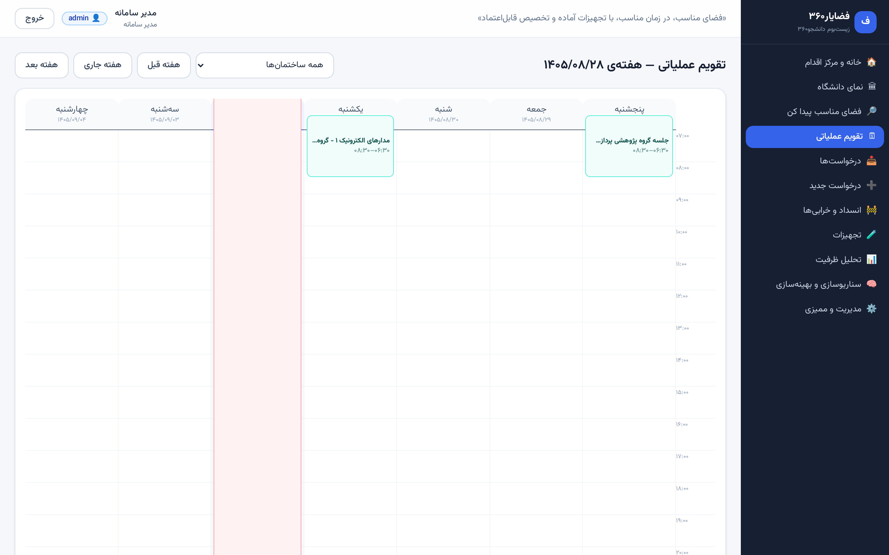
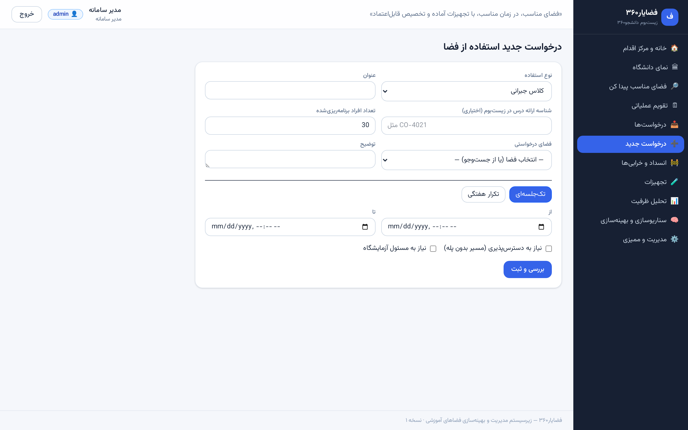
۴.۴ گردش کار درخواست و جابهجایی جلسه
هر درخواست از مسیر مشخصی میگذرد: پیشنویس ← ارسال ← بررسی کارشناس (تأیید یا رد با توضیح) ← تخصیص قطعی؛ و در هر گام، تصمیمگیر، زمان و توضیح در جدول approval_actions ثبت میشود. جلساتِ تأییدشده را میتوان جابهجا کرد (جلسهٔ جبرانی)؛ سامانه پیش از ثبت جابهجایی، همان کنترلهای تعارض و ساعت مجاز را از نو اجرا میکند تا جابهجایی هرگز باعث تداخل نشود. لغو درخواست هم فقط در وضعیتهای مجاز ممکن است و سابقهٔ آن در ممیزی میماند.
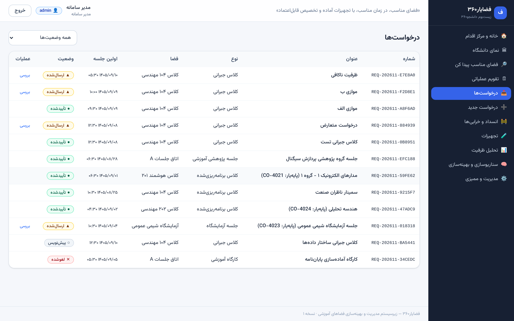
۴.۵ دفاع دومرحلهای در برابر رزرو متعارض
مهمترین قابلیت اعتمادسازِ سامانه، جلوگیری قطعی از تخصیص دو رزرو متعارض به یک فضا است. دفاع نخست در سرویس رزرو است: پیش از ثبت، بازهٔ مؤثر (جلسه + آمادهسازی و پاکسازی) با تخصیصهای فعال مقایسه میشود. دفاع دوم در خود دیتابیس است: قید یکتایی زمانی که حتی اگر دو کاربر دقیقاً همزمان تأیید کنند، دومین تراکنش را رد میکند. برای رسیدن به این تضمین، بازهٔ زمانی به نوع tstzrange نگه داشته میشود و قید با افزونهٔ btree_gist ساخته میشود:
ALTER TABLE resource_allocations
ADD CONSTRAINT excl_space_active_period
EXCLUDE USING gist (
space_id WITH =,
tstzrange(effective_start, effective_end, '[)') WITH &&
) WHERE (status = 'active');
۴.۶ انسداد تعمیراتی و پیشنهاد جایگزین
نگهداری و تعمیرات میتواند برای هر فضا «انسداد» ثبت کند: بازهای که فضا در آن بههیچوجه رزرو نمیشود، با دلیل (مثل تعمیر پروژکتور) و سطح اهمیت. انسداد فعال از داشبورد قابل مشاهده است و اگر درخواستی روی بازهٔ انسداد بیفتد، کارشناس بهجای ردِ خشک، پیشنهاد جایگزین میبیند: نزدیکترین بازههای آزاد همان فضا یا فضاهای مشابه با امکانات همارز. به این ترتیب، تعمیرات بهجای بحران، یک گفتوگوی رزرو قابلحل میشود.
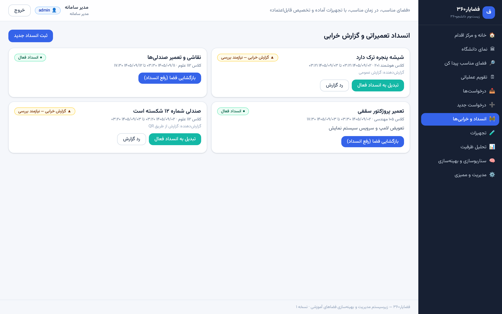
۴.۷ تجهیزات و ظرفیت مؤثر
تجهیزات سه دستهاند: ثابتِ نصبشده در فضا (مثل ویدئوپروژکتور)، قابلحمل (مثل لپتاپ امانی) و شمارشی برای آزمایشگاه (مثل ۲۴ میکروسکوپ). در تأیید هر درخواست، موجودی تجهیزات قابلحمل و شمارشی بهصورت تراکنشی رزرو میشود و اگر ظرفیت تجهیزاتی آزمایشگاه از تعداد دانشجویان کمتر باشد، تأیید متوقف میشود. «ظرفیت مؤثر» هر فضا از روی چیدمان، حد ایمن و تجهیزات محاسبه میشود و مبنای مقایسهٔ درخواستها است.
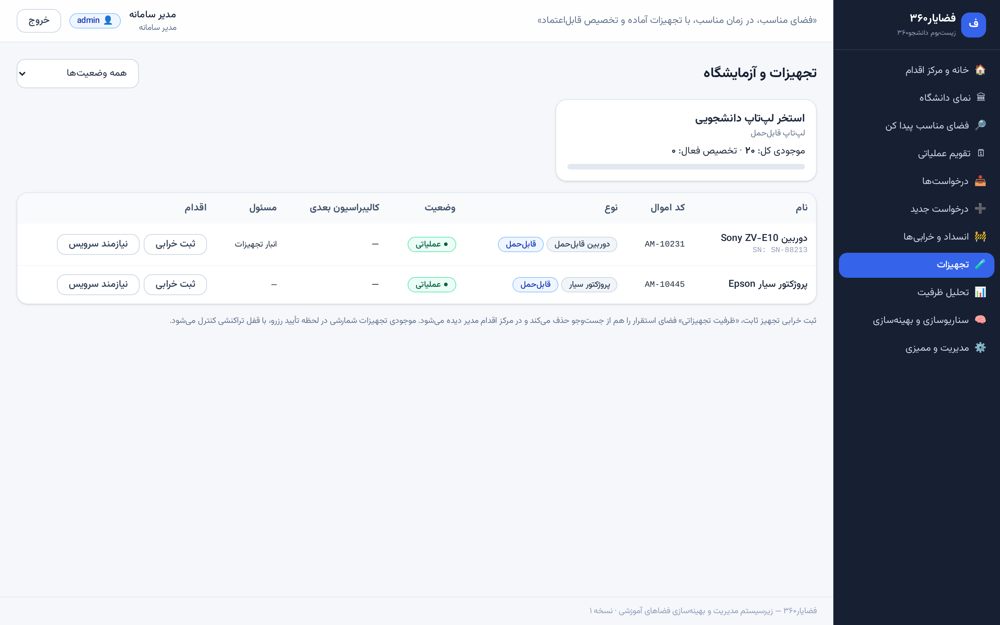
۴.۸ تحلیل ظرفیت و کیفیت داده
صفحهٔ تحلیل، استفادهٔ واقعی را میسنجد: نرخ اشغال و نرخ خلو، «صندلیـساعت» (واحد ترکیبی ظرفیت × مدت) و نقطهٔ حرارتی استفاده بر حسب روز × ساعت. برای هر گروه، کیفیت داده نیز نمره میگیرد: فضاها بدون چیدمان، بدون امکانات یا بدون تصویر شمارش و بهصورت برچسب هشدار نشان داده میشوند تا بهبود شناسنامهها از شعار به «فهرست کار» تبدیل شود. این بخش عمداً بدون وابستگی به سرویس بیرونی و کامل بر پایهٔ دادهٔ خود سامانه کار میکند.
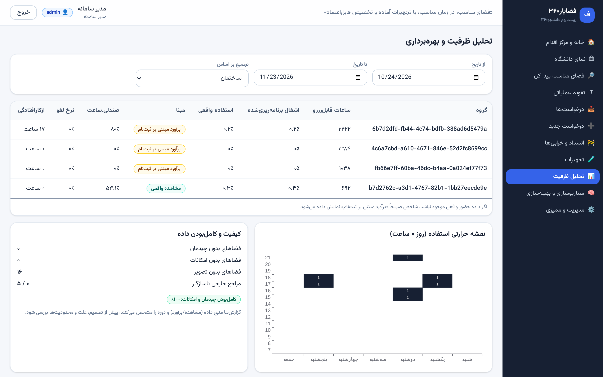
۴.۹ سناریوسازی و بهینهسازی تخصیص
مرکز سناریوسازی، جایی است که مدیر میپرسد «اگر قواعد رتبهبندی را عوض کنم چه میشود؟». سناریو با مجموعهای از قواعد رتبهبندی قیدمحور (مثل اولویت هفتههای درس، بازدهی فضا و انصاف بین گروهها) اجرا میشود و پیشنهاد تخصیص، همراه با امتیاز و دلیل هر تصمیم نمایش داده میشود؛ سپس با تأیید انسانی، پیشنهادها بهصورت تراکنشی اعتبارسنجی و ثبت میشوند. موتور فعلی قاعدهمحور است و برای مسائل متوسط دانشگاه کفایت میکند؛ نقطهٔ تعویض با موتور قیود (CP-SAT) در معماری پیشبینی شده است.
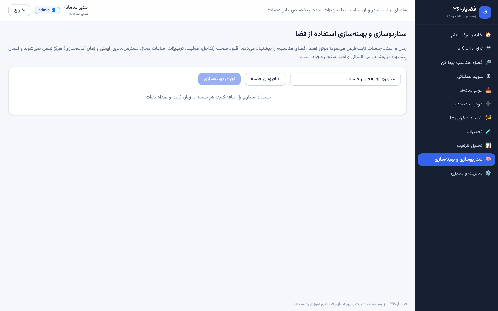
۴.۱۰ دستیار «فضای مناسب پیدا کن»
دستیار جستجو، با یک جملهٔ فارسیِ عادی کار میکند؛ مثلاً: «برای سهشنبه ساعت ۱۰، یک کلاس برای ۳۲ نفر با نمایشگر میخواهم». متن ورودی، بدون فراخوانی هیچ سرویس هوش مصنوعی بیرونی، به معیارهای دقیق (روز هفته، ساعت، ظرفیت، تجهیزات، نوع فضا) تجزیه میشود و سامانه فضاهای منطبق را با درصد تطابق و دلیل هر تطابق مرتبشده برمیگرداند. چون تجزیه کاملاً قاعدهمحور و داخل همان فرایند است، این قابلیت در محیطهای بدون اینترنت و بدون کلید API نیز کار میکند.
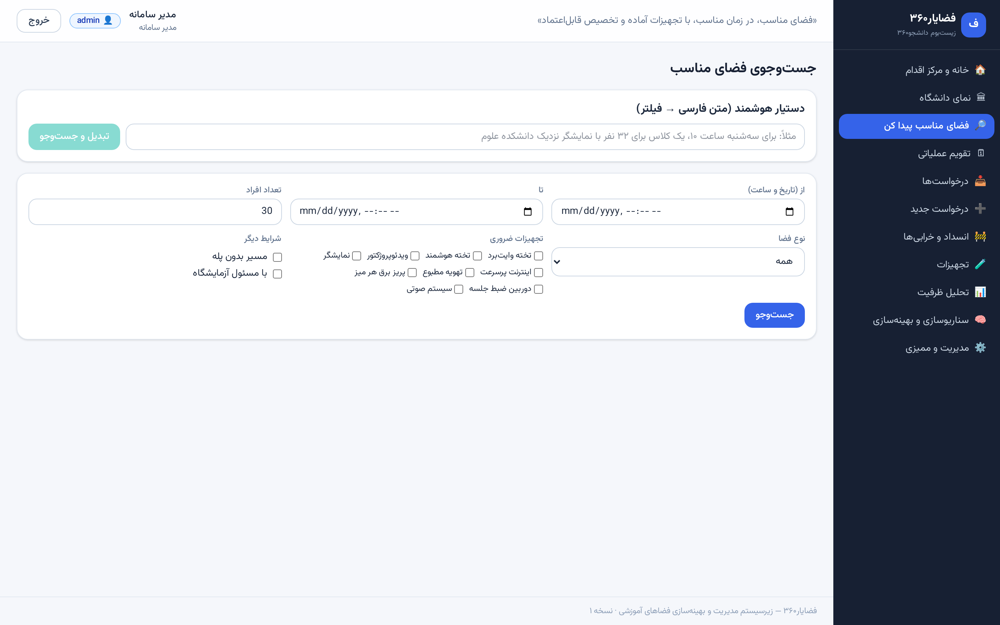
۴.۱۱ QR کنار در و صفحهٔ عمومی فضا
هر فضا یک شناسهٔ عمومی و کد QR دارد که کنار در نصب میشود؛ اسکن آن بدون ورود به سامانه، صفحهٔ عمومی فضا را باز میکند: مشخصات، ظرفیت، تجهیزات و برنامهٔ قابلانتشار. این صفحه برای مهمانها، دانشجویان و بازرسان طراحی شده و هیچ دادهٔ شخصی یا رزرو محرمانهای نمایش نمیدهد.
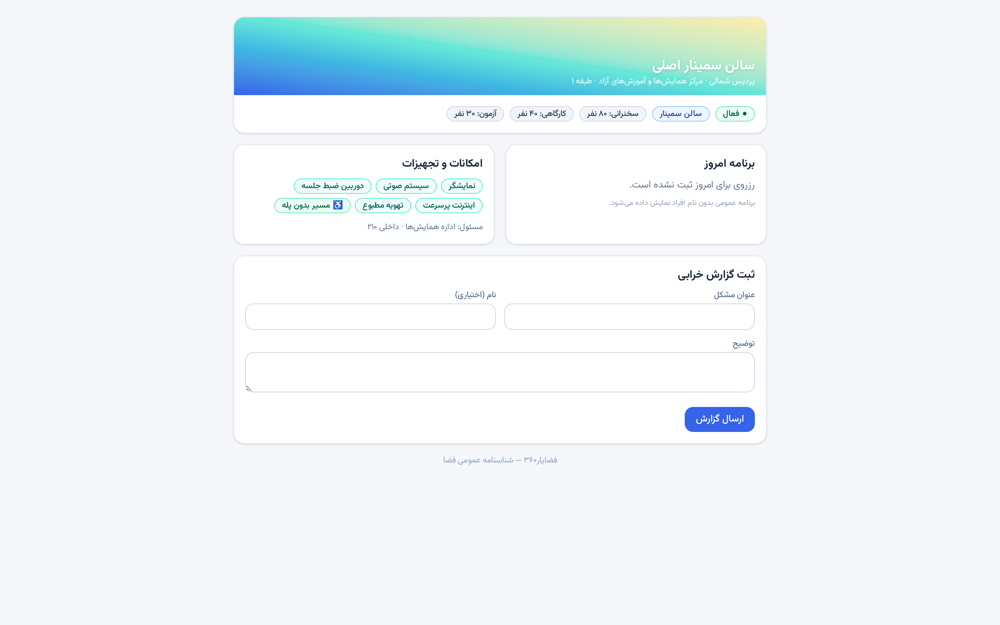
امنیت، نقشها و ممیزی
احراز هویت با توکن JWT (الگوریتم HS256) انجام میشود؛ عمر توکن بهصورت پیکربندیپذیر است (پیشفرض ۴۸۰ دقیقه) و کلید امضا از طریق متغیر محیطی داده میشود و نباید مقدار نمونه باقی بماند. پس از احراز هویت، هر درخواست با نقش کاربر سنجیده میشود؛ کنترل دسترسی در لایهٔ سرویس اجرا میشود نه فقط در رابط کاربری، بنابراین تغییر در فرانتاند بهتنهایی هیچ درِ بستهای باز نمیکند. برای درخواستهای نوشتاری، محدودسازی نرخ با پیکربندی پیشفرض ۲۴۰ درخواست در دقیقه فعال است و آپلود فایلها با دو کنترل (نوع مجاز و سقف ۵ مگابایت) و نامگذاری تصادفی روی دیسک انجام میشود تا فایل آپلودی هرگز مسیر اجرا پیدا نکند.

هشت نقش در سامانه تعریف شده است که هر یک، دامنهٔ مشخصی از اختیارها دارد؛ نقشها بر مبنای «کمترین اختیار لازم» طراحی شدهاند و ترکیبهای پرخطا (مثلاً دانشجو و تأیید رزرو) در آزمونهای خودکار صراحتاً رد میشوند. تمام اتفاقهای معنادار سامانه — تأیید، رد، جابهجایی، لغو، انسداد، تغییر شناسنامه و ورود کاربران — در جدول ممیزی ثبت میشود؛ سابقهٔ ممیزی فقطافزایشی است و در صفحهٔ مدیریت، بهصورت خوانا و قابلجستوجو نمایش داده میشود.
| نقش | تواناییهای کلیدی در سامانه |
|---|---|
| مدیر سامانه | پیکربندی، مدیریت کاربران و نقشها، مشاهدهٔ ممیزی کامل |
| کارشناس پشتیبانی | بررسی و تأیید/رد درخواستها، ثبت انسداد، جابهجایی جلسات |
| مدیر آموزش | مدیریت درخواستهای کلاسی، مشاهدهٔ تحلیل واحدهای آموزشی |
| مدیر آزمایشگاه | مدیریت درخواستهای آزمایشگاهی و ظرفیت تجهیزاتی |
| نگهداری و تعمیرات | ثبت و مدیریت انسدادهای تعمیراتی و وضعیت فضاها |
| استاد | ثبت درخواست، جابهجایی جلسات درس خود، ثبت شواهد جلسه |
| دانشجو | مشاهدهٔ برنامه و جستوجوی فضا (بدون اختیار تأیید) |
| رئیس دانشگاه | مشاهدهٔ گزارشهای تحلیلی و شاخصهای کلان |

ملاحظات فنی
زمان و تقویم. سامانه با منطقهٔ زمانی Asia/Tehran پیکربندی میشود و تمام بازههای زمانی در پایگاه داده بهصورت UTC با آگاهی منطقهٔ زمانی ذخیره میشوند (نوع timestamptz)؛ نمایش شمسی تنها در لایهٔ رابط کاربری انجام میشود و هفته از شنبه آغاز میگردد. رزروهای تکرارشونده هنگام ساخت، به رخدادهای تاریخدار مستقل شکسته میشوند؛ به همین دلیل تغییر ساعت رسمی کشور یا انتقال یک جلسه، هرگز اثر جانبی روی جلسات دیگر سری ندارد.
همروندی. جایی که دو کاربر میتوانند همزمان تصمیم بگیرند (تأیید رزرو، قرضدادن تجهیز)، سامانه با دو ابزار محافظت میکند: قفل تراکنشی روی ردیفهای مرجع (مثل ردیف فضا) و قید یکتایی زمانی در دیتابیس. نتیجه، رفتار قطعی و قابلتست است؛ نه «معمولاً درست کار میکند». درخواستهای نوشتاریِ تکرارشده نیز با سرصفحهٔ Idempotency-Key شناسایی و خنثی میشوند تا بازتلاش شبکه، رزرو دوباره نسازد.
قرارداد API و خطاها. همهٔ نقاط اتصال زیر پیشوند نسخهدار /api/v1 هستند و فهرستها با پارامترهای page و size صفحهبندی میشوند. خطاها ساختاریافته برمیگردند: کد ماشینخوان (مثل SLOT_TAKEN یا OUTSIDE_ALLOWED_HOURS)، پیام فارسیِ کاربرپسند و جزئیات کمکی؛ به این شکل رابط کاربری میتواند بر اساس کد تصمیم بگیرد، نه بر اساس متن خطا. سلامت سامانه نیز با نقطهٔ /api/v1/health شامل وضعیت خود سرویس و دسترسی به دیتابیس گزارش میشود.
اتصال نسخهدار به پایهیار۳۶۰. دادهٔ پایه از طریق «رونوشت مرجع» میآید: هر رکورد با شناسهٔ بیرونی و شمارهٔ نسخه ذخیره میشود و بهروزرسانی فقط در صورت نسخهٔ جدیدتر پذیرفته میشود. رویدادهای خروجی ابتدا در جدول outbox ثبت و سپس منتشر میشوند (الگوی Transactional Outbox)؛ بنابراین «ثبت در دیتابیس» و «اطلاعرسانی به زیرسیستمها» یا هر دو رخ میدهند یا هیچکدام. در حالت دمو، همگامسازی آزمایشی پایهیار مجاز است؛ در استقرار واقعی این کلید با نشانی سامانهٔ پایه تنظیم میشود.
پشتیبانگیری و بازیابی. پشتیبانگیری با ابزار استاندارد pg_dump انجام میشود و در آزمونهای نسخهٔ ۱.۰.۰، چرخهٔ کامل پشتیبانگیری ← پاکسازی ← بازیابی ← سالمبودن داده عملاً اجرا شده است. آپلودهای کاربران در پوشهٔ مجزا نگه داشته میشوند و باید در سیاست پشتیبانگیری لحاظ شوند؛ در استقرار Docker این پوشه روی volume ماندگار است.
نکات فنی استقرار و عملیات
سامانه در سه حالت قابل اجراست و هر سه با یک پورت مشترک (۸۰۹۵) کار میکنند. حالت نخست، Docker Compose است که PostgreSQL اختصاصی و سرویس API را با هم بالا میآورد و برای استقرار دائمی توصیه میشود. حالت دوم، بستهٔ پرتیبل لینوکس است که مفسر مستقل Python و PostgreSQL توکار (pgserver) را در خود دارد و روی هر سیستم لینوکس x86_64 بدون نصب پایتون، پایچارم، PostgreSQL یا Docker اجرا میشود — مناسب دمو، آموزش و استقرار در شبکههای محدود. حالت سوم، اجرا از سورس برای توسعه است. در همهٔ حالتها فرانتاند ساختهشده (dist) توسط خود API سرو میشود و health-check داخلی برای نظارت عملیاتی وجود دارد.
| متغیر محیطی | پیشفرض | توضیح |
|---|---|---|
| FAZAYAR_DATABASE_URL | — (در Docker تنظیم میشود) | نشانی SQLAlchemy پایگاه داده؛ در پرتیبل خودکار ساخته میشود |
| FAZAYAR_JWT_SECRET | مقدار نمونهٔ دمو | کلید امضای توکن؛ در استقرار واقعی الزاماً تغییر داده شود |
| FAZAYAR_PORT | 8095 | پورت سرویس (در پرتیبل و Docker) |
| FAZAYAR_SEED_ON_START | true | ساخت دادهٔ نمونه در نخستین اجرا؛ در محیط واقعی false شود |
| FAZAYAR_TIMEZONE | Asia/Tehran | منطقهٔ زمانی مرجع سامانه |
| FAZAYAR_UPLOAD_DIR | backend/data/uploads | محل ذخیرهٔ آپلودها (روی volume ماندگار) |
| FAZAYAR_MAX_UPLOAD_MB | 5 | سقف حجم هر فایل آپلودی |
| FAZAYAR_RATE_LIMIT | 240 | حداکثر درخواست نوشتاری در دقیقه برای هر کاربر |
| FAZAYAR_ACCESS_TOKEN_MINUTES | 480 | عمر توکن احراز هویت |
| FAZAYAR_DIST_DIR | frontend/dist | محل فایلهای ساختهشدهٔ رابط کاربری |
| FAZAYAR_PAYEHTAR_BASE_URL | — | نشانی پایهیار۳۶۰ برای همگامسازی نسخهدار |
کیفیت و آزمون. نسخهٔ ۱.۰.۰ با ۳۸ سناریوی آزمون API تأیید شده است که گردش کار کامل رزرو، تعارض همزمان، جابهجایی جلسه، تجهیزات، انسداد تعمیراتی، دسترسی نقشها، خطای ساختاریافته، ممیزی و چرخهٔ پشتیبانگیری را پوشش میدهند. آزمونها خودکار و بهصورت اسکریپتِ قابل اجرا در مخزن نگه داشته میشوند (scripts/api_smoke.py) و روی هر دو بستهٔ Docker و پرتیبل اجرا شدهاند. افزونهٔ btree_gist در بستهٔ پرتیبل نیز همراهسازی شده است و در محیطهای بدون این افزونه، سامانه با هشدار اجرا میشود و دفاع تعارض به لایهٔ قفل تراکنشی سپرده میشود — طراحی «کاهش با محترمبودن» بهجای توقف سرویس.
محدودیتهای نسخهٔ حاضر و مسیر توسعه
صداقت فنی، بخشی از طراحی است؛ این بخش مرزهای مشخص نسخهٔ ۱.۰.۰ را ثبت میکند تا انتظارها با واقعیت همخوان باشد. موتور بهینهسازی فعلی قاعدهمحور (رتبهبندی قیدمحور) است و برای مسائل متوسط کفایت میکند، اما برای جستوجوی ترکیبیاتی وسیع باید با موتور حل قیود مانند OR-Tools CP-SAT جایگزین شود؛ نقطهٔ این تعویض، سرویس optimizer است و رابط دادهٔ آن پیش از این پایدار شده است. احراز هویت فعلی JWT محلی است و نقطهٔ جایگزینی با سرویس هویت مرکزی زیستبوم (OIDC) در ماژول امنیتی پیشبینی شده است؛ تا آن زمان، مدیریت کاربران از صفحهٔ مدیریت انجام میشود.
بستهٔ پرتیبل برای لینوکس x86_64 با glibc مدرن ساخته شده و PostgreSQL توکار آن برای «استفادهٔ عملیاتی تیمها و دمو» تنظیم شده است؛ برای استقرار سازمانی چندکاربره، نسخهٔ Docker با PostgreSQL اختصاصی، پشتیبانگیری منظم و پایش توصیه میشود. تقویم سامانه شمسی است و ورودیهای میلادی فقط در سطح API پذیرفته میشود؛ اتصال به سامانههای حضور و غیاب یا برنامهٔ درسی دانشگاه هنوز از طریق همان اتصال نسخهدار پایهیار۳۶۰ تعریف خواهد شد.
- گام بعدی ۱: جایگزینی موتور بهینهسازی با OR-Tools CP-SAT با حفظ رابط دادهٔ فعلی.
- گام بعدی ۲: اتصال OIDC به سرویس هویت زیستبوم و حذف مدیریت گذرواژهٔ محلی.
- گام بعدی ۳: اعلانها و اطلاعرسانی رویدادها (تأیید، یادآوری جلسه) از طریق پایهیار۳۶۰.
- گام بعدی ۴: نقشهٔ تعاملی طبقات با انتخاب فضا روی نقشه و نمای «حی زندهٔ دانشگاه».
- گام بعدی ۵: پشتیبانگیری زمانبندیشدهٔ داخلی و شاخصهای پایش در داشبورد مدیریت.